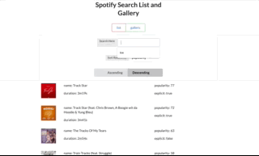

Galaxy Simulation
This project was the capstone of the high performance scientific computing class I took at UChicago.
For this project, we learned how for larger problems, the data structures designed to solve them
must live on multiple computers and take advantage of the compute as well as memory and networking capability
of every machine in the cluster. For this project we were tasked with simulating a galaxy with
100,000 stars, for 1000 frames. For each frame, the gravitational effect of every star on every other star
needed to be accounted for. To achieve these 10,000,000,000,000 calculations, we created a "gravity pipeline"
datastructure and ran it on the Mira supercomputer at Argonne National Lab.

Chicago Crime Vizualization
This project was the capstone of Big Data Application Architecture. For technical purposes (to fit on a statically served site) all values have
been precomputed and cached. However, originally, the project consisted of an implementation of the lambda architecture. The lambda architecture
is an alternative to the three-tier web architecture which focuses on data availability, accuracy, and integrity. This project used node
(for middleware), hbase as the batch layer, and hive as the speed and serviing layer. The frontend was created using D3.js. Data for this project
was provided by the City of Chicago through their transparency initiatives. More data can be found at https://data.cityofchicago.org/.

Spotify React App
This project was the final solo project for The Art of Web Programming. For this assignment, we learned ES6 (fancy, modern Javascript), OAuth, and React.
This site is a functioning single-page web application which uses the spotify API to help users find music they would be interested in.
(If recruiters are reading, OAuth is similar to SAML, and React is similar to both Angular and Angular 2.) ;)

Sed etiam facilis
Aenean ornare velit lacus, ac varius enim lorem ullamcorper dolore. Proin aliquam facilisis ante interdum. Sed nulla amet lorem feugiat tempus aliquam.

Feugiat lorem aenean
Aenean ornare velit lacus, ac varius enim lorem ullamcorper dolore. Proin aliquam facilisis ante interdum. Sed nulla amet lorem feugiat tempus aliquam.
Pure Feature-rich HTML/CSS/JS Webpage
For this project, we were tasked with creating a webpage using only pure HTML/CSS/JS. A framework could not
be used. It was required to have a multi-media element, animations, a carousel, a modal, and an index and had to
be somewhat reactive.